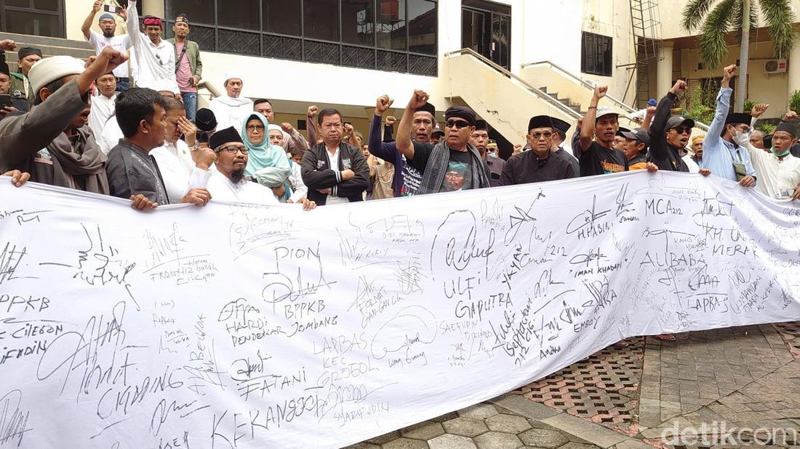
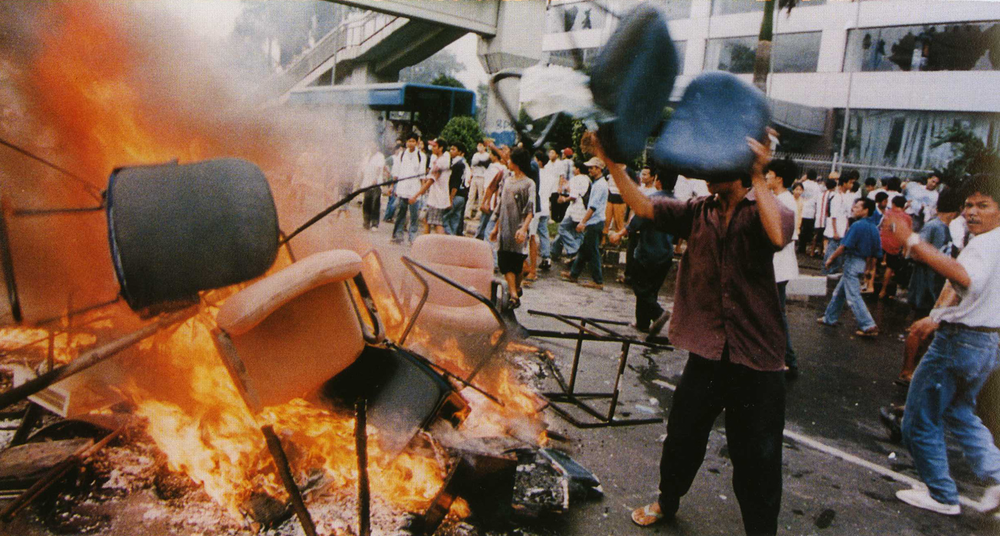
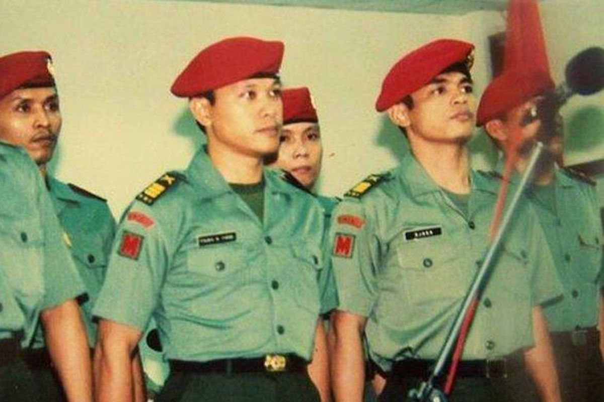
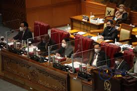
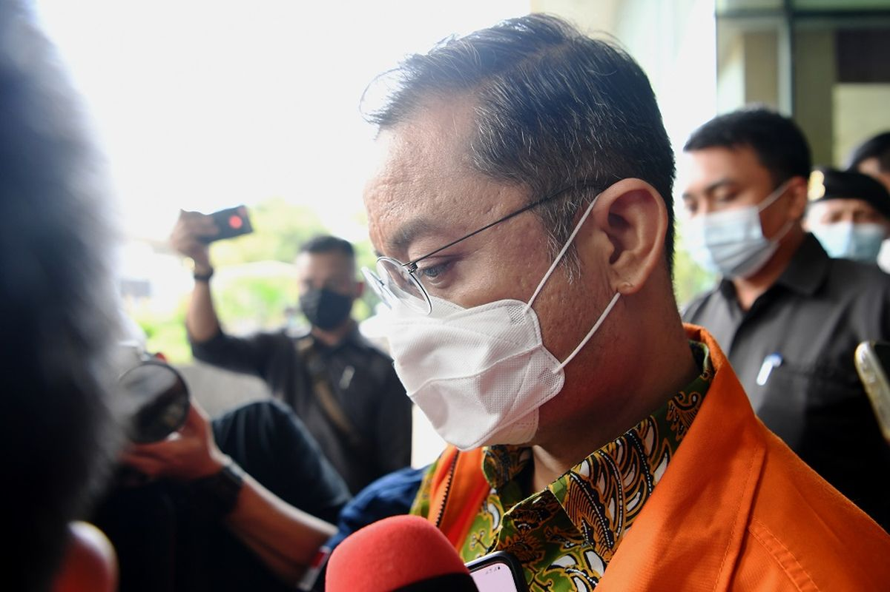

Ketuhanan Yang Maha Esa
Toleransi Beragama yang Memudar
Sila pertama mengajarkan kita untuk bertoleransi terhadap perbedaan keyakinan. Namun, kini sering muncul intoleransi, diskriminasi, dan konflik berbasis agama yang merongrong persatuan bangsa.
Contoh Kasus
Warga Cilegon Tolak Pendirian Gereja, Ungkit SK Bupati Tahun 1975
Sejumlah orang yang tergabung dalam “Komite Penyelamat Kearifan Lokal Kota Cilegon” menggelar aksi di halaman kantor DPRD Cilegon (7 September 2022), menolak pendirian gereja di Cilegon. Mereka juga membawa kain putih untuk tandatangan dan meminta pemerintah daerah menegakkan aturan tentang pendirian rumah ibadah selain masjid
Orator aksi menyebut SK Bupati Serang No.189/Huk/SK/1975 (20 Maret 1975), tentang penutupan gereja/Kelompok Jemaat Kristen di wilayah Kabupaten Serang (yang kini termasuk Cilegon), sebagai landasan hukum utama penolakan
SK tersebut dikeluarkan berkaitan dengan pembangunan PT Krakatau Steel, yang menyebabkan pemindahan pesantren, pemukiman, dan makam leluhur. Warga menyebut perjuangan mereka dalam mendukung pembangunan pabrik baja tersebut sebagai dasar agar Cilegon dijadikan wilayah khusus (hanya untuk masjid)
💡 Solusi yang Bisa Dilakukan:
- Peninjauan Ulang SK Bupati 1975 secara Hukum
- Dialog Lintas Agama dan Tokoh Lokal
- Sosialisasi dan Edukasi tentang Hak Beragama
- Pilihan Alternatif Lokasi (Jika Mendasar dan Berdialog)
Kemanusiaan yang Adil dan Beradab
Hilangnya Rasa Kemanusiaan
Sila kedua menekankan pentingnya menjunjung tinggi harkat dan martabat manusia. Sayangnya, kini marak terjadi pelanggaran HAM, diskriminasi, dan kekerasan yang mencerminkan lunturnya nilai kemanusiaan.
Tragedi Mei 1998: Kerusuhan Anti-Tionghoa yang Meninggalkan Luka Mendalam
Pada pertengahan Mei 1998, Indonesia mengalami kerusuhan massal yang menyasar etnis Tionghoa di berbagai kota besar, terutama Jakarta, Solo, dan Medan. Ratusan toko, rumah, dan pusat perbelanjaan milik warga Tionghoa dibakar dan dijarah. Lebih dari 1.000 orang tewas, dan banyak perempuan Tionghoa menjadi korban kekerasan seksual. Tragedi ini terjadi di tengah krisis ekonomi dan politik menjelang lengsernya Presiden Soeharto. Banyak keluarga Tionghoa yang traumatik dan memilih meninggalkan Indonesia. Diskriminasi sistemik terhadap etnis Tionghoa, termasuk larangan penggunaan bahasa Mandarin dan perayaan Imlek, turut menciptakan ketegangan sosial yang meledak pada Mei 1998.
💡 Solusi yang Bisa Dilakukan:
- Pengakuan Resmi dan Permintaan Maaf dari Negara
- Kompensasi dan Rehabilitasi untuk Para Korban
- Penguatan Hukum Anti-Diskriminasi dan Hate Crime
- Pendidikan Toleransi dan Keberagaman di Sekolah
- Dialog Antar-Etnis dan Rekonsiliasi Nasional
Persatuan Indonesia
Perpecahan di Tengah Keberagaman
Sila ketiga mengajarkan persatuan dalam keberagaman. Namun, seringkali perbedaan suku, agama, ras, dan golongan justru menjadi sumber perpecahan yang mengancam keutuhan NKRI.
Penculikan Aktivis 1997-1998: Tim Mawar dan Perpecahan Sipil-Militer
Antara 1997-1998, Tim Mawar (Mawar Merah) yang dipimpin Prabowo Subianto menculik 23 aktivis pro-demokrasi, termasuk Pius Lustrilanang, Desmond J. Mahesa, dan Mugiyanto. Dari 23 orang yang diculik, hanya 9 yang dibebaskan, 1 tewas, dan 13 lainnya hilang hingga kini. Operasi ini menciptakan trauma mendalam di kalangan aktivis dan mahasiswa. Masyarakat terpecah antara yang mendukung tindakan keras militer demi "stabilitas" dan yang menentang pelanggaran HAM. Perpecahan ini juga terjadi di internal TNI, antara faksi yang pro-reformasi dan yang mempertahankan status quo. Kasus ini meninggalkan ketidakpercayaan antara rakyat sipil dan institusi militer yang bertahan hingga era reformasi.
💡 Solusi yang Bisa Dilakukan:
- Pengungkapan Kebenaran dan Rekonsiliasi Nasional
- Reformasi Sektor Keamanan dan Kontrol Sipil atas Militer
- Penegakan Hukum terhadap Pelaku Pelanggaran HAM Berat
- Kompensasi dan Dukungan Psikologis untuk Keluarga Korban
- Penguatan Lembaga HAM dan Mekanisme Perlindungan Aktivis
Kerakyatan yang Dipimpin oleh Hikmat Kebijaksanaan dalam Permusyawaratan/Perwakilan
Krisis Demokrasi dan Musyawarah
Sila keempat menekankan pentingnya musyawarah mufakat dalam pengambilan keputusan. Kini, budaya diskusi yang sehat mulai terkikis, diganti dengan politik uang dan kepentingan golongan.
Pengesahan UU IKN Nusantara: Keputusan Sepihak Tanpa Konsultasi Mendalam
Pada Januari 2022, DPR mengesahkan UU No. 3 Tahun 2022 tentang Ibu Kota Nusantara (IKN) yang memindahkan ibu kota dari Jakarta ke Kalimantan Timur. Keputusan besar ini menuai kritik karena minimnya konsultasi publik yang substansial. Masyarakat Kalimantan Timur, terutama suku Dayak dan Kutai, mengaku tidak dilibatkan secara memadai dalam proses pengambilan keputusan. Banyak pakar lingkungan, ekonomi, dan tata kota yang menyuarakan keberatan tidak mendapat ruang dialog yang cukup. Survei menunjukkan mayoritas rakyat belum memahami sepenuhnya dampak dan konsekuensi pemindahan ibu kota. Proses legislasi yang terburu-buru ini dianggap melanggar prinsip musyawarah mufakat dan tidak mencerminkan kehendak rakyat yang sesungguhnya.
💡 Solusi yang Bisa Dilakukan:
- Konsultasi Publik yang Lebih Luas dan Bermakna
- Moratorium Sementara untuk Dialog dengan Stakeholder
- Penyediaan Informasi Transparan tentang Dampak IKN
- Pelibatan Masyarakat Adat dalam Proses Perencanaan
- Evaluasi Berkala dengan Melibatkan Partisipasi Publik
Keadilan Sosial bagi Seluruh Rakyat Indonesia
Kesenjangan Sosial yang Melebar
Sila kelima mengajarkan pentingnya keadilan sosial untuk semua. Namun, kesenjangan ekonomi semakin lebar, korupsi merajalela, dan akses terhadap pendidikan serta kesehatan masih timpang.
Vonis Ringan Koruptor: Kasus Juliari Batubara dan Ketimpangan Keadilan
Mantan Menteri Sosial Juliari Batubara divonis 12 tahun penjara dan denda Rp 500 juta atas kasus korupsi bansos COVID-19 senilai Rp 32,4 miliar (Desember 2022). Vonis ini dianggap tidak sebanding dengan kerugian negara yang ditimbulkan. Sementara itu, kasus pencurian sandal jepit atau ayam oleh rakyat kecil bisa dihukum bertahun-tahun. Disparitas hukuman antara koruptor dan pencuri kecil menciptakan rasa ketidakadilan di masyarakat. Juliari bahkan mendapat remisi dan keluar lebih cepat dari penjara. Kasus serupa terjadi pada banyak koruptor lain yang mendapat vonis ringan, sementara program bansos yang dikorupsi seharusnya membantu rakyat miskin di masa pandemi. Hal ini menunjukkan sistem peradilan yang belum mencerminkan keadilan sosial yang merata.
💡 Solusi yang Bisa Dilakukan:
- Pemberatan Sanksi untuk Tindak Pidana Korupsi
- Penghapusan Remisi untuk Koruptor dan Narapidana Korupsi
- Optimalisasi Aset Recovery dan Ganti Rugi Negara
- Penguatan Lembaga Anti-Korupsi (KPK, Kejaksaan, Kepolisian)
- Penegakan Hukum yang Berkeadilan Tanpa Pandang Bulu
Tentang Kami
Website ini dibuat sebagai media edukatif untuk mengingatkan kembali pentingnya nilai-nilai Pancasila dalam kehidupan bermasyarakat, berbangsa, dan bernegara.
Visi Kami
Menjadi wadah edukasi yang dapat menyadarkan masyarakat akan pentingnya mengamalkan nilai-nilai Pancasila dalam kehidupan sehari-hari.
Misi Kami
• Menyediakan konten edukatif tentang Pancasila yang mudah dipahami
• Menginspirasi generasi muda untuk mencintai dan mengamalkan Pancasila
• Memfasilitasi diskusi konstruktif tentang implementasi nilai Pancasila